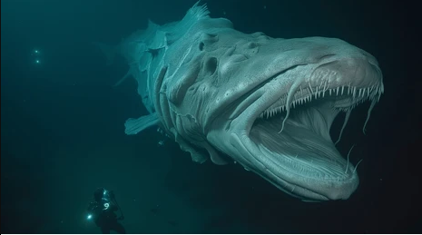
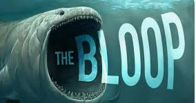

The Ultra Abyssal Zone.

What do you think the deepest part of the ocean looks like? Did you expect to see alien-like monsters?
Well today, I'm going to show you the deepest part of the ocean.
Let's talk about the past for a minute.Sharks are some of the biggest predators of the sea and the biggest ever know shark was called the Megladon.The great white shark is the decendant of the Megladon.Another cool fact is that the ocean is one the biggest places on the Earth that takes up around 70% of the Earth
One of the biggest mysteries of the underwater world is the bloop,It was one of the highest frequencies from the sea. Scientists were puzzled for years until the confirmed it was an ice burg breaking off.Some conspiracy theorists say that a supermassive animal made that sound from the depths of the ocean.
